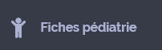

Danemark
Présentation
HEJ! JEG ER SYGE PLEJERSKE; JEG VIL BRUGE MIN TELEFON TIL AT OVERSŒTTE DE SPØRGSMÅL JEG HAR.
SYGEHJŒLPER
LŒGE
AMBULANCEREDDER
FRIVILLIG
RECEPTIONIST
LŒGE STUDERENDE
JORDMOR
SEKRETŒR
SYGEHJŒLPER
Identité
MÅ JEG SE DIT PAS?
HAR DU ET IDENTITETSKORT?
HAR DU NOGEN PAPIRER MED DIT NAVN PÅ?
HAR DU ET EUROPŒISK SYGESIKRINGSBEVIS?
HAR DU ET PRIVAT SYGESIKRINGSKORT?
DET BLIVER DIG DER BETALER FOR BEHANDLINGEN
DER BLIVER IKKE NOGET DU SKAL BETALE FOR
HVILKET LAND ER DU FRA?
HVAD ER DIN NUVŒRENDE ADRESSE?
ER DER ET TELEFON NUMMER HVOR VI KAN KONTAKTE DIG?
Attente
VENT VENLIGST HER :
PÅ EN AF STOLENE
PÅ BŒNKEN
VENTE VŒRELSET
VI KALDER PÅ DIG
LAD VENLIGST VŒRE MED AT RYGE, SPISE ELLER DRIKKE MENS DU VENTER
DIN FAMILIE BLIVER NØDT TIL VENTE HER
DET ER MULIGT AT LŒGEN VIL BEDE OM F.EKS. EN BLODPRØVE, ET RØNTGENBILLEDE, EN SCANNING, ALT EFTER BEHOV. ELLER BEHOLDE DIG TIL OBSERVATION.
VŒR VENLIG IKKE AT SPISE ELLER DRIKKE UDEN LŒGEN'S OK - VISSE UNDERSØGELSER SKAL FORETAGES PÅ FASTENDE HJERTE
DET VIL TAGE EN TIME FØR RESULTATET AF BLODPRØVEN ER KLART
Accueil
SÅ HVAD ER DER SKET?
GØR DET ONDT NOGEN STEDER?
JA
NEJ
VIS MIG HVOR DET GØR ONDT?
NU UNDERSØGER JEG DIG LIGE
MELLEM 0 OG 10 - HVOR ONDT GØR DET?
10 ER ULIDELIG SMERTE
0
1
2
3
4
5
6
7
8
9
10
VŒR VENLIG AT TAGE DIT TØJ AF SÅ JEG KAN UNDERSØGE DIG/KAN DU TAGE DIT TØJ AF SÅ JEG KAN UNDERSØGE DIG?
DU KAN BEHOLDE UNDERTØJET PÅ
KAN DU SŒTTE DIG PÅ STOLEN?
KAN DU LŒGGE DIG OP PÅ BRIKSEN?
KAN DU LŒGGE DIG PÅ BÅREN?
Neurologie
MISTEDE DU BEVIDSTHEDEN?
VED DU HVILKEN DAG DET ER IDAG?
VED DU HVOR DU ER?
FØLG MIN FINGER MED ØJNENE
KAN DU BEVŒGE DINE HŒNDER OG FØDDER?
KAN DU MŒRKE NÅR JEG RØRER VED DINE HŒNDER OG FØDDER?
KAN DU SE PÅ MINE ØJNE SÅ JEG KAN OBSERVERE DINE PUPILLER?
ER DER NOGEN STEDER DER FØLES UROLIGT ELLER PRIKKENDE? VIS MIG HVOR?
GIV MINE HŒNDER ET HÅNDTRYK/TRYK MIG I HÅNDEN
ÅBEN DINE ØJNE
ÅBEN DIN MUND
LØFT DIN HØJRE ARM
GØR DET ONDT I HOVEDET?
SMERTEN ER KOMMET:
LIDT EFTER LIDT
LIGE PLUDSELIGT
HAR DU ONDT I NAKKEN?
HAR DU VŒRET UDE AT REJSE I DE SIDSTE PAR MÅNEDER?
I HVILKET LAND?
GENERER LYSET DIG?
GENERER STØJ DIG?
JEG PRIKKER LIGE DIN FINGERSPIDS SÅ JEG KAN MÅLE DIT BLODSUKKER
Pneumologie
JEG LŒGGER MIN HÅND PÅ DIN MAVE FOR AT CHECKE DIN VEJRTRŒKNING. MENS JEG GØR DETTE TRŒK VEJRET NORMALT OG UNDLAD AT TALE.
HAR DU SVŒRT VED AT FÅ VEJRET? ER DU FORPUSTET?
TRŒK VEJRET DYBT OG HOLD DET
TRŒK VEJRET NORMALT
TRŒK VEJRET DYBT
RYGER DU?
HAR DU ASTMA?
HAR DU TAGET DIN ASTMA MEDICIN?
HAR DU INDÅNDET RØG?
KAN DU PUDSE NŒSEN SÅ VI KAN SE OM DER ER NOGEN SPOR AF SOD?
Cardiologie
ER SMERTEN
STRAMMENDE
STIKKENDE
BRŒNDENDE
SPREDER SMERTEN SIG? VIS MIG I HVILKEN RETNING?
HVORLŒNGE HAR DU HAFT DENNE SMERTE?
MINUTTER
TIMER
DAGE
JEG VIL TAGE DIN PULS
JEG TRYKKER FORSIGTIGT PÅ DIN NEGL
JEG VIL TAGE DIT BLODTRYK
HAR DU HJERTEBANKEN?
KAN DU ÅBNE MUNDEN OG LØFTE TUNGEN SÅ JEG KAN GIVE DIG NOGET MEDICIN?
HJŒLPER MEDICINEN MOD SMERTEN?
DRIKKER DU ALKOHOL?
HAR DU SUKKERSYGE?
HAR DU FOR FORHØJET KOLESTEROL TAL?
JEG VIL LYTTE TIL DIT HJERTE, LAD VŒRE MED AT BEVŒGE DIG I NOGLE SEKUNDER, DET GØR IKKE ONDT
Malaise
LAGDE DU MŒRKE TIL AT DU VAR VED AT BLIVE UTILPAS?
HVAD FØLTE DU MENS DU VAR UTILPAS?
PRIKKEN
SVIMMELHED
STOR TRŒTHED
BLIVER DU SVIMMEL?
SPREDER SMERTEN SIG? HVORDAN?
HVOR MŒRKEDE DU DETTE?
HVOR LŒNGE VAREDE DIN UTILPASHED?
HAR DU HAFT UFRIVLLIG VANDLADNING?
HAR DU BIDT DIG I TUNGEN? ÅBEN MUNDEN?
HAR DU HAFT KRAMPEANFALD?
HAR DU SPIST IDAG?
Digestif
VIS MIG HVOR DET GØR ONDT?
SPREDER SMERTEN SIG? VIS MIG HVORDAN?
HAR DU TABT VŒGT DE SENESTE MÅNEDER? HVOR MANGE KILO?
FØLES DET BRŒNDENDE NÅR DU TISSER?
ER DER BLOD I DIN URIN?
HVILKEN DATO HAVDE DU DIN SIDSTE MENSTRUATION?
ER DU GRAVID?
HVORNÅR TISSEDE DU SIDST IDAG?
ER DU FORSTOPPET?
HVOR MANGE DAGE HAR DU VŒRET DET?
HAR DU KVALME?
HAR DU TYND MAVE?
HAR DU KASTET OP?
ER DER BLOD I DIN AFFØRING?
HAR DU LUFT I MAVEN? ER DU OPPUSTET?
MÅ JEG FORETAGE EN REKTALUNDERSØGELSE?
KAN DU TISSE I DENNE KOP SÅ VI KAN LAVE EN URINPRØVE?
DU SKAL LIGE VASKE DIG FORNEDEN FØR DU TISSER I KOPPEN
Infectieux
ER DU BLEVET STUKKET ELLER BIDT?
VIS MIG HVOR?
HVOR VAR DE FØRSTE KNOPPER?
HVORLŒNGE HAR DIT BEN VŒRET RØDT?
KLØR DET? GENERER DET DIG?
DU BLIVER NØDT TIL AT VŒRE I ISOLATION, VŒK FRA ANDRE
DU SKAL BEHOLDE DENNE MASKE PÅ
HAR DU HAFT UBESKYTTET SEX?
JEG VIL TAGE DIN TEMPERATUR
Ophtalmologie
ER DIT SYN SLØRET?
SER DU DOBBELT?
HAR DU HOVEDPINE?
FØLES DET SOM OM RUMMET DREJER RUNDT?
HAR DU SLÅET HOVEDET FORNYLIGT?
Antécédents
HAR DU NOGEN SYGDOMME? (SUKKERSYGE, FOR HØJT BLODTRYK? )
HAR DU VŒRET INDLAGT PÅ HOSPITALET FORNYLIGT?
TAGER DU NOGEN MEDICIN FOR TIDEN? HVILKEN?
HAR DU EN RECEPT MED DIN MEDICIN?
HAR DU NOGEN ALLERGIER? (HVILKE?)
ER DER NOGEN ANDEN I DIN FAMILIE DER HAVDE SYGDOMMEN?
Pédiatrie
HAR BABYEN TABT VŒGT? HVOR MANGE KILO?
ER BABYEN'S VACCINATIONER AJOUR?
ER BARNET'S SØSKENDE SYGE?
SPISER BARNET GODT? HAR BARNET EN GOD APPETIT?
HAR BARNET KASTET OP?
VIRKER HAN/HUN MERE UROLIG END NORMALT?
FOREKOMMER HAN/HUN AT VŒRE MERE TRŒT END NORMALT?
HAR BARNET TYND MAVE?
Gynécologie
ER DU GRAVID?
HVOR MANGE UGER ER DU HENNE?
HAR DU MENSTRUATION?
HAR DU MISTET BLOD?
ER BLODET DER KOM UD SORT ELLER RØDT?
HAR DU HAFT PROBLEMER UNDER TIDLIGERE GRAVIDITETER?
HAR DU VEER?
ER VANDET GÅET?
KAN DU MŒRKE BABYEN BEVŒGE SIG?
BRUGER DU PRŒVENTION?
JEG VIL FORETAGE EN GYNŒKOLOISK UNDERSØGELSE, LŒG DIG VENLIGST PÅ BRIKSEN
KUNNE DU TAGE DIT UNDERTØJ AF?
Traumatologie
BLEV DU KASTET UD AF KØRETØJET?
HVOR HURTIGT KØRTE DU?
HAVDE DU EN HJŒLM PÅ?
HAVDE DU SIKKERHEDSSELE PÅ?
FALDT DU?
FRA HVILKEN HØJDE FALDT DU?
TAGER DU BLODFORTYNDENDE MEDICIN?
JEG VIL GIVE DIG EN KRAVE PÅ DER SKAL BESKYTTE RYGSØJLEN
JEG PUTTER NOGET ANTISEPTISK PÅ SÅRET
JEG SYR LIGE SÅRET SAMMEN
JEG GIVER DIG EN FORBINDING PÅ
JEG BEDØVER OMKRING SÅRET
VENLIGST SID/LIG STILLE
JEG LAVER EN GIPSFORBINDING
DU SKAL OPERERES
Examens
DU SKAL HAVE :
JEG VIL GIVE DIG :
EN INFUSION
JEG VIL TAGE EN BLODPRØVE
ET PLASTER/ EN FORBINDING
EN INDSPRØJTNING
JEG VIL LIGE VASKE DIG LIDT
EN SCANNING
ET RØNGENTBILLEDE
EN GIPSFORBINDING
EN ULTRALYDS SCANNING
EN OPERATION
DAG
I MORGEN
DU SKAL TAGE ET BAD INKLUSIVE HÅRVASK FØR OPERATIONEN
UNDERSØGELSEN GØR IKKE ONDT
EFTER OPERATIONEN VIL DU HAVE :
URIN SONDE
MAVE SONDE
ET DRŒN
ET AR
DU SKAL TAGE ALLE DINE SMYKKER OG PIERCINGER AF
DU SKAL TAGE DIN NEGLELAK AF
DU SKAL TAGE TAND PROTESER UD OG HØREAPPARAT AF
SIG TIL HVIS DU HAR:
EN PACEMAKER
HJERTEVENTIL
EN STENT
EN PROTESE
CLIPS I KRANIET
ØRE IMPLANTAT
ØJEN IMPLANTAT
METAL I KROPPEN
HJERTESTARTER
EN PICC LINE (Periperally Inserted Central Catheter)
AMMER DU?
KAN DU SŒTTE DIG?
KAN DU REJSE DIG OP?
KAN DU GÅ?
Traitements et consignes
JEG GIVER DIG :
NOGET MEDICIN
NOGET SMERTESTILLENDE
ANTIBIOTIKA
DU MÅ IKKE DRIKKE
DU MÅ IKKE SPISE
DU MÅ IKKE REJSE DIG OP
DU SKAL BLIVE LIGGENDE PÅ RYGGEN
DU MÅ IKKE RYGE
FOR AT TILKALDE OS, TRYK HER
FOR AT TŒNDE OG SLUKKE LYSET, TRYK HER
TOILETTET ER HER
BADEVŒRELSET ER HER
DIN STUE ER HER
Conclusion
DEN/DET ER BRŒKKET
DEN/DET ER IKKE BRŒKKET
DU SKAL OPERERES
DU SKAL KOMME IGEN I MORGEN TIDLIG
DU SKAL KOMME TILBAGE OM:
DU SKAL HAVE STINGENE TAGET UD OM:
DU SKAL HAVE GIPS PÅ
DU SKAL HAVE EN SKINNE PÅ
DU KAN GODT TAGE HJEM
DU SKAL PÅ HOSPITALET
DU SKAL BLIVE PÅ HOSPITALET
DU BLIVER OVERFØRT TIL EN ANDEN AFDELING